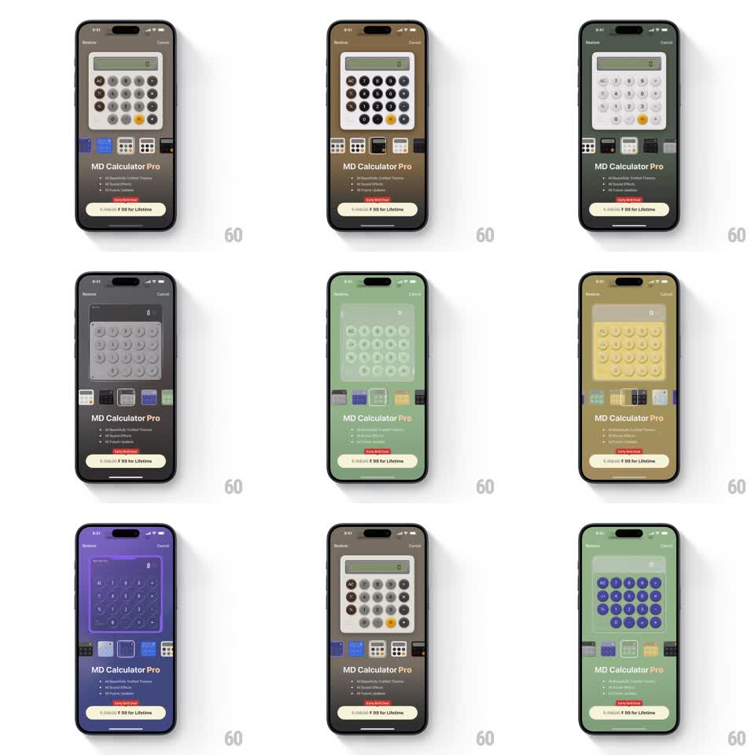

Media
Frame-by-frame

Rebuild this interaction 1:1: MD Calculator Pro's paywall theme picker - tapping swatches in a horizontal theme row morphs the whole screen: calculator preview, page background, and CTA button all shift to the selected theme's palette.

Rebuild this interaction 1:1: MD Calculator Pro's paywall theme picker - tapping swatches in a horizontal theme row morphs the whole screen: calculator preview, page background, and CTA button all shift to the selected theme's palette. ## Integration Integration: stack-agnostic spec - springs given as stiffness/damping, timed motions as duration + curve; map every value to your framework and animation library of choice. ## Scene Paywall sheet: calculator preview on a full-bleed tinted background, "MD Calculator Pro" with feature bullets, "Early bird special" tag, a "₹99 for Lifetime" CTA, Restore/Cancel. A horizontal row of theme thumbnails sits under the preview: dark LCD, black, white, mint green, butter yellow, purple, blue variants. ## Motion spec Pattern: theme-morphing paywall picker. - Tap a thumbnail: the page background color wipes to the theme's palette (~300ms ease, radiating subtly from the thumbnail), the calculator preview crossfades its key fills/display (~250ms), and the CTA button re-tints (~200ms). - Selected thumbnail gets a white ring (150ms, scale 1 -> 1.08 with spring ~350/24); deselected returns flat. - The transition is simultaneous across all three surfaces - background, preview, CTA land together. - Preview keys keep their layout constant; only fills, display tint, and accents morph. ## Calibration - Saturated themes (purple, blue) dim the background slightly behind the preview so key contrast holds. - Thumbnails are live mini-previews of each theme, not generic color dots. ## Reduced motion All surfaces crossfade without the radiating wipe. ## Don't miss - The CTA button is part of the theme - it must re-tint with every pick. - The feature list text re-colors for legibility per theme (light text on dark themes).